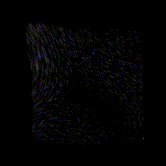
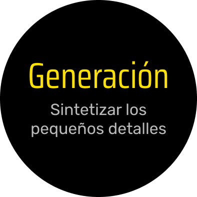
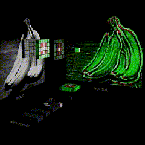
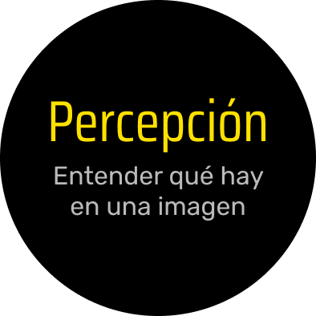

El proceso de aumentar la resolución de una imagen con el objetivo principal de mejorar la calidad sin necesidad de volver a recrearla, ahorrando tiempo y recursos.




> Resolución con IA
Técnicas de re-escalado basadas en aprendizaje (Deep learning)
> Principales métodos con IA
Redes Neuronales Convolucionales
Las CNNs pueden aprender a identificar patrones en imágenes, como bordes y texturas, y aplicar transformaciones que mejoren la calidad de la imagen.